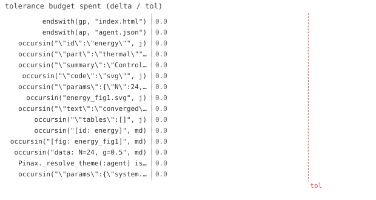

15/15 passed · 9.77s
| id | label | got | want | Δ vs tol (kind) | |
|---|---|---|---|---|---|
| ✓ | t1 | endswith(gp, "index.html") @ test_agent.jl:27 code | 1.0 | 1.0 | 0.0 vs 0.5 (abs) |
| ✓ | t2 | endswith(ap, "agent.json") @ test_agent.jl:28 code | 1.0 | 1.0 | 0.0 vs 0.5 (abs) |
| ✓ | t3 | occursin("\"id\":\"energy\"", j) @ test_agent.jl:31 code | 1.0 | 1.0 | 0.0 vs 0.5 (abs) |
| ✓ | t4 | occursin("\"part\":\"thermal\"", j) @ test_agent.jl:32 code | 1.0 | 1.0 | 0.0 vs 0.5 (abs) |
| ✓ | t5 | occursin("\"summary\":\"Control: N, g\"", j) @ test_agent.jl:33 code | 1.0 | 1.0 | 0.0 vs 0.5 (abs) |
| ✓ | t6 | occursin("\"code\":\"svg\"", j) @ test_agent.jl:34 code | 1.0 | 1.0 | 0.0 vs 0.5 (abs) |
| ✓ | t7 | occursin("\"params\":{\"N\":24,\"g\":0.5}", j) @ test_agent.jl:35 code | 1.0 | 1.0 | 0.0 vs 0.5 (abs) |
| ✓ | t8 | occursin("energy_fig1.svg", j) @ test_agent.jl:36 code | 1.0 | 1.0 | 0.0 vs 0.5 (abs) |
| ✓ | t9 | occursin("\"text\":\"converged\"", j) @ test_agent.jl:37 code | 1.0 | 1.0 | 0.0 vs 0.5 (abs) |
| ✓ | t10 | occursin("\"tables\":[]", j) @ test_agent.jl:38 code | 1.0 | 1.0 | 0.0 vs 0.5 (abs) |
| ✓ | t11 | occursin("[id: energy]", md) @ test_agent.jl:41 code | 1.0 | 1.0 | 0.0 vs 0.5 (abs) |
| ✓ | t12 | occursin("[fig: energy_fig1]", md) @ test_agent.jl:42 code | 1.0 | 1.0 | 0.0 vs 0.5 (abs) |
| ✓ | t13 | occursin("data: N=24, g=0.5", md) @ test_agent.jl:43 code | 1.0 | 1.0 | 0.0 vs 0.5 (abs) |
| ✓ | t14 | Pinax._resolve_theme(:agent) isa Pinax.AgentTheme @ test_agent.jl:46 code | 1.0 | 1.0 | 0.0 vs 0.5 (abs) |
| ✓ | t15 | occursin("\"params\":{\"system.N\":16,\"system.g\":0.5}", j) @ test_agent.jl:61 code | 1.0 | 1.0 | 0.0 vs 0.5 (abs) |

⤓ downloadtmp = mktempdir()
svg = joinpath(tmp, "f.svg")
write(svg, "<svg xmlns='http://www.w3.org/2000/svg'><rect/></svg>")
Pinax.reset!(; title="demo")
cf = joinpath(tmp, "comments.toml")
Pinax.add_comment(cf, :energy_fig1, "converged"; author="me")
# one document → two backends, by switching the theme only
gp = Pinax.render(; out=joinpath(tmp, "human"), theme=:gallery, comments_file=cf)
ap = Pinax.render(; out=joinpath(tmp, "agent"), theme=:agent, comments_file=cf)
@test endswith(gp, "index.html") # human backend → HTML@test endswith(ap, "agent.json") # agent backend → structured dataj = read(ap, String)
@test occursin("\"id\":\"energy\"", j)@test occursin("\"part\":\"thermal\"", j)@test occursin("\"summary\":\"Control: N, g\"", j)@test occursin("\"code\":\"svg\"", j) # the generating expression (verification)@test occursin("\"params\":{\"N\":24,\"g\":0.5}", j) # structured data binding (NamedTuple axes)@test occursin("energy_fig1.svg", j) # the rendered asset path@test occursin("\"text\":\"converged\"", j) # the id-keyed comment thread@test occursin("\"tables\":[]", j) # every page/section carries a tables fieldmd = read(joinpath(tmp, "agent", "agent.md"), String)
@test occursin("[id: energy]", md)@test occursin("[fig: energy_fig1]", md)@test occursin("data: N=24, g=0.5", md)@test Pinax._resolve_theme(:agent) isa Pinax.AgentThemetmp = mktempdir()
svg = joinpath(tmp, "f.svg")
write(svg, "<svg xmlns='http://www.w3.org/2000/svg'><rect/></svg>")
# a DataKey's dotted axes are emitted as a structured, key-sorted JSON object (via the ParamIO ext)
key = ParamIO.DataKey(Dict{String,Any}("system.g" => 0.5, "system.N" => 16), 0)
Pinax.reset!(; title="d")
j = read(Pinax.render(; out=joinpath(tmp, "a"), theme=:agent), String)
@test occursin("\"params\":{\"system.N\":16,\"system.g\":0.5}", j) # sorted dotted axes, native nums{kind=link}